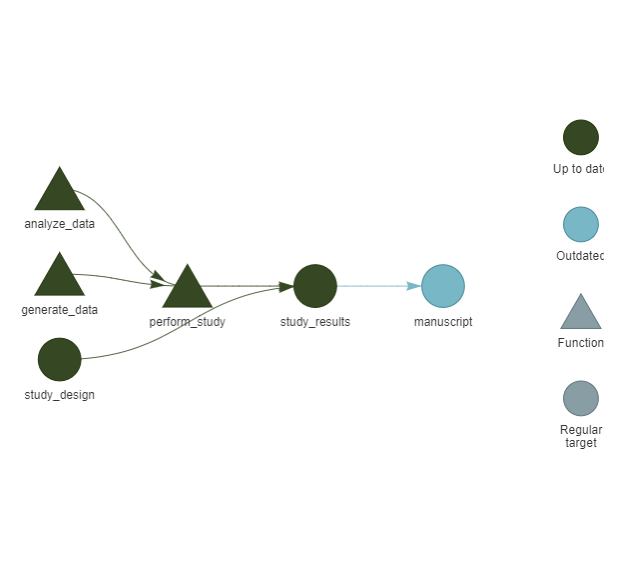
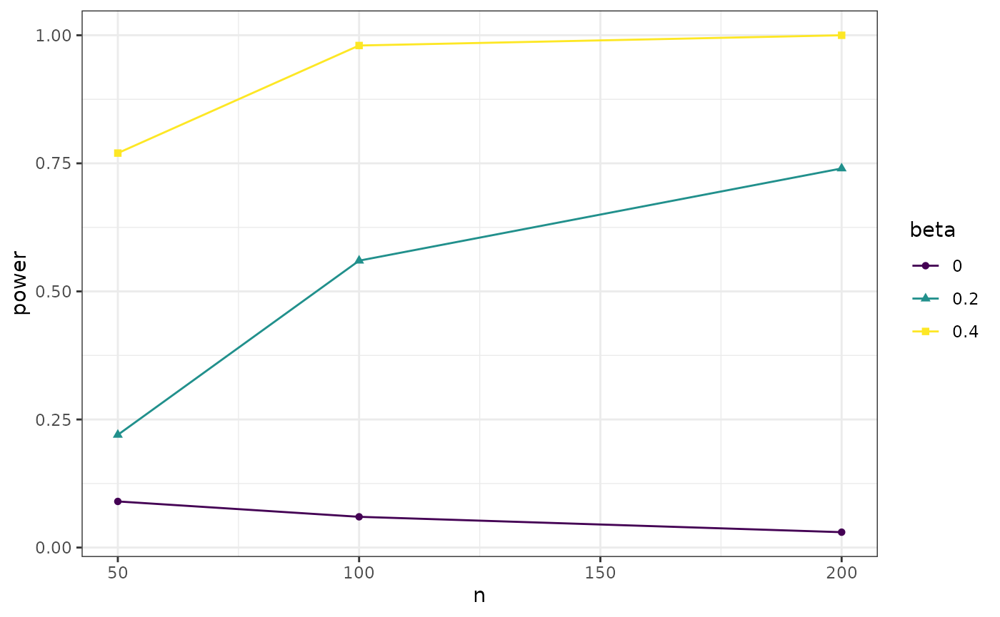

Conducting Theory-Based Reproducible Simulation Studies
computational_social_science.RmdThis tutorial introduces a reproducible research workflow for computational social science studies, based on the Workflow for Open Reproducible Code in Science (WORCS).
The WORCS workflow, implemented in the worcs package, is
designed to create fully reproducible research archives in R. The
theorytools R-package is designed to make and work with
FAIR theories: theories that are Findable in standardized
archives (Zenodo, Open Science Framework), Accessible using human- and
machine-readable file formats, Interoperable for specific purposes (in
this case, conducting computational simulation studies), and Reusable
(licensed to be iteratively updated, including by others than the
original author).
In this tutorial, we combine worcs and
theorytools to conduct a fully reproducible, theory-driven
computational simulation study.
Setting up a Reproducible Project with WORCS
1. Create a new WORCS Project
WORCS helps automate reproducible workflows by setting up version control, metadata, licenses, and more.
- Open RStudio.
- Go to File > New Project > New Directory > WORCS
Project Template.
- Choose a directory name, e.g.,
"fair_theory_simulation". - Optionally, you can create a GitHub repository. If you have GitHub integration set up, all that is required is to specify a GitHub remote repository name.
- Keep Manuscript template set to “GitHub document”
- Keep Preregistration template set to “None”
- Keep License set to “cc0” for a CC-0 copyright waiver
- Select “Use renv”
-
De-select “Use targets”: we will use
targetsin the next chapter, but we’ll add support for it manually for didactic purposes. Once you’re familiar with thetargetsworkflow, feel free to add it automatically when creating your next project. - Select “Open in new session”
- Choose a directory name, e.g.,
- Click Create Project.
WORCS will now set up a project that implements best practices for reproducibility. A new Rstudio instance should open automatically.
When working through the next sections, add the code chunks to your
"manuscript.Rmd" file except when the code is labeled with
Interactive:. Code labeled with
Interactive: should be run only once, in the Console
window. All other code can be inserted in code chunks in your
"manuscript.Rmd" file; knit it regularly to verify that
everything runs as expected.
What does it mean to run R code interactively?
2. Download a FAIR Theory
Interactive: You’ll need to install some packages to run this tutorial. Run this code:
install.packages("theorytools", prompt = FALSE)
install.packages("dagitty", prompt = FALSE)
install.packages("tidySEM", prompt = FALSE)To your "manuscript.Rmd" file, add the following lines
in the setup chunk:
We will use a FAIR version of Self-Determination Theory (SDT). The vignette Formalizing Self-Determination Theory describes how this FAIR theory was created based on the original Self-Determination Theory (Deci and Ryan 2012). It was specified as a Directed Acyclic Graph, or DAG: a diagram that specifies the causal relations proposed by a theory. Such diagrams can be used to derive hypotheses, select control variables for causal inference, and conduct simulation studies (as we will do in this tutorial).
Interactive: Run the code below to download this
existing FAIR theory, which is stored on Zenodo. It will create a new
subfolder called "theory/" for these files, because the
theory repository has its own README and LICENSE files; you don’t want
to overwrite those files from your WORCS repository. Optionally, you can
have a look at the archived version by opening the URL https://doi.org/10.5281/zenodo.15648655.
theorytools::download_theory("10.5281/zenodo.15648655", path = "theory")The theory includes a README file, describing the contents of the
other files, a LICENSE describing how the theory can be reused, a file
called sdt.txt containing the DAG, and
definitions.csv, containing construct definitions. Note
that these definitions require further specification; as explained in
the Vignette on formalizing SDT), the book chapter describing the
theory does not explicitly define any of the constructs involved.
Why is the FAIR theory downloaded into a separate
theory/subfolder?
3. Load the FAIR Theory
This FAIR theory is an augmented DAG, which can be read using the
dagitty package.
The vignette Specifying Augmented Directed Acyclic Graphs describes what augmented DAGs are.
Such DAGs are particularly useful for computational social science
studies, because the theorytools package contains methods
to convert augmented DAGs to generative models.
Now, let’s load the augmented DAG. Note: when
running this code from a code chunk in your Rmarkdown file, you must use
the file path ../theory/sdt.txt to go back to the parent
directory, because the manuscript and the theory are both in different
subdirectories. If you run it interactively instead, you are already
inside the parent directory, and you can use the path
theory/sdt.txt.
Then, we can plot the model using the tidySEM package. Get a basic
plot by running graph_sem(sdt):
tidySEM::graph_sem(sdt)
According to the DAG, what are the causes of
wellbeing?
4. Creating a Computational Model
Computational simulation studies allow us to generate and analyze simulated datasets, for example to:
- Explore what-if scenarios
- Test the implications of model assumptions
- Plan our analyses before data collection
- Conduct power analysis and plan our sample size
- Preregister a fully reproducible analysis pipeline (Preregistration-As-Code, Peikert, Van Lissa, and Brandmaier 2021; Van Lissa 2022).
Below is a simple code snippet to generate synthetic data using the
theorytools::simulate_data() function. This function
samples random values for exogenous variables and computes endogenous
variables as functions of their predictors (linear functions, by
default). By default, regression coefficients are randomly sampled in
the range [-0.6, +0.6] unless specific values are provided
by the user. You might use prior studies or expert knowledge to set more
realistic parameter values, or use the conventional values for null (0),
small (.2), or medium (.4) effect sizes. By default, normal
distributions are assumed for exogenous variables and residual error,
unless other distributions are specified. Note that many other functions
for simulating data exist, and some may be better suited to particular
use cases. The tutorial on Specifying
Augmented DAGS contains more information about user-defined
functional forms and (error) distributions.
set.seed(1)
theorytools::simulate_data(sdt, n = 5)| external_event | healthy_development | integration | intrinsic_motivation | locus_of_causality | needs | wellbeing |
|---|---|---|---|---|---|---|
| -0.33 | -1.18 | 0.16 | 0.12 | -1.04 | 0.78 | -0.67 |
| -0.41 | 1.52 | -0.59 | -0.99 | -0.30 | -0.98 | 0.41 |
| -0.48 | 0.95 | -0.48 | -1.77 | 0.51 | 1.07 | 1.77 |
| -0.98 | -1.32 | 1.11 | -1.16 | -1.83 | -0.02 | 1.58 |
| -0.27 | -1.10 | -0.01 | -0.64 | 1.28 | 1.17 | 0.54 |
This synthetic dataset is consistent with the structure encoded in our FAIR SDT, though the parameter values are arbitrary.
Which of the following is not a reason to use computational simulation studies?
Simplifying the Model
Suppose we are interested in studying the effect of intrinsic motivation on well-being. Even if our research is grounded in SDT, we do not need the entire theory to hypothesize about this specific relationship. We can use the DAG to derive a restricted version of the theory that includes all variables that might confound the relationship of interest between intrinsic motivation and well-being:
sdt_pruned <- theorytools:::prune_dag(sdt,
exposure = "intrinsic_motivation",
outcome = "wellbeing")
sdt_pruned## dag {
## intrinsic_motivation
## needs
## wellbeing
## intrinsic_motivation -> wellbeing
## needs -> intrinsic_motivation
## needs -> wellbeing
## }We can now generate a synthetic dataset based on this simplified DAG:
set.seed(1)
df <- theorytools::simulate_data(sdt_pruned, n = 100)
head(df)| intrinsic_motivation | needs | wellbeing |
|---|---|---|
| -0.81 | -0.33 | -1.19 |
| -1.22 | -0.41 | -1.90 |
| -0.49 | -0.48 | 0.22 |
| 0.28 | -0.98 | 1.25 |
| 0.82 | -0.27 | 0.34 |
| 0.59 | -1.01 | -1.17 |
5. Analyze the Simulated Data
If our goal is to conduct a computational study, we can manipulate any aspect of the data simulation procedure. These manipulations are the independent variables of our computational study. We can then apply any kind of analysis to the simulated data to obtain the outcome (dependent variable) of our computational study.
One of the most basic types of computational simulation studies is a power analysis, where we manipulate the true effect size of a parameter (independent variable: effect size) and calculate whether or not we observe a significant result for a test of that parameter in the simulated data (dependent variable: significance).
The analysis function in this case would be a simple significance test of the parameter of interest. First, we conduct bivariate linear regression (because the DAG indicated that we need to control for the effect of needs):
##
## Call:
## lm(formula = wellbeing ~ intrinsic_motivation + needs, data = df)
##
## Residuals:
## Min 1Q Median 3Q Max
## -2.93688 -0.87862 -0.03086 0.74147 2.56125
##
## Coefficients:
## Estimate Std. Error t value Pr(>|t|)
## (Intercept) -0.02492 0.11579 -0.215 0.830069
## intrinsic_motivation 0.44496 0.11522 3.862 0.000203 ***
## needs -0.30228 0.11815 -2.558 0.012061 *
## ---
## Signif. codes: 0 '***' 0.001 '**' 0.01 '*' 0.05 '.' 0.1 ' ' 1
##
## Residual standard error: 1.126 on 97 degrees of freedom
## Multiple R-squared: 0.1839, Adjusted R-squared: 0.1671
## F-statistic: 10.93 on 2 and 97 DF, p-value: 5.231e-05Then, our outcome of interest is the significance of the effect of
intrinsic_motivation. We can extract the p-value as
follows, and compare it to the significance level
to get a binary result (significant: TRUE or FALSE):
sum_res <- summary(res)
sum_res$coefficients["intrinsic_motivation", "Pr(>|t|)"] < .05Run the code yourself, and answer true or false: In this one dataset, the result was significant.
Using worcs with targets: Sustainable
Reproducibility
One of the main tenets of open and reproducible science is the ability to re-run all analyses from raw data to published output, to ensure that results are still valid. However, in computationally intensive projects, re-running unchanged code repeatedly can be redundant, slow, and wasteful.
The targets package reduces unnecessary compute by
breaking down an analysis pipeline into steps that explicitly reference
one another, where each step is only re-computed if either the step
changed, or its inputs changed. Reducing unnecessary computation speeds
up the analysis process and reduces the carbon footprint of analyses
(Gupta et al. 2021).
By combining worcs with targets, we get the
best of both worlds:
-
worcsis used to create a fully reproducible research archive; -
targetsensures that redundant steps in a reproducible analysis pipeline are not unnecessarily re-computed.
6. Add targets to the WORCS Project
Interactive: Let’s install the packages required for this next section:
install.packages("targets", prompt = FALSE)
install.packages("tarchetypes", prompt = FALSE)Interactive: Then, add targets
integration to the worcs project by running:
worcs::add_targets()Note the status messages. The newly created _targets.R
file specifies the steps in the reproducible workflow. The newly created
"./R/" directory should contain functions that are used in
that workflow.
7. Try Running the Pipeline
Open the file _targets.R. Note that the default pipeline
(which will look something like the code below) consists of a few
placeholder steps:
- Create
data - Run a
model - Render the
manuscript.Rmd
list(
tar_target(
name = data,
command = tibble(x = rnorm(100), y = rnorm(100))
),
tar_target(
name = model,
command = coefficients(lm(y ~ x, data = data))
),
tarchetypes::tar_render(manuscript, "manuscript/manuscript.Rmd")
)Interactive: You can run this pipeline by executing
the command targets::tar_make().
Set a Seed
Computational simulation studies typically rely on random number generation to repeatedly simulate a scenario with some variability.
This dependency on random numbers makes the results non-reproducible (the random numbers will be different upon repeated evaluation).
Fortunately, true random numbers are rarely used: we typically use a sequence of pseudo random numbers.
To make the randomness reproducible, we can set a “seed” for the random number generator. Setting a seed essentially jumps into the sequence of pseudo-random numbers at the same point each time, so we get the same “random” numbers over and over.
To set a seed, add the command set.seed(1) above the
targets pipeline. You can use any number instead of
1, which will lead to different results.
Debugging
Running targets::tar_make() might fail; I have observed
two modes of failure:
- It cannot find the file at
../theory/sdt.txt; changing this totheory/sdt.txtseems to work. Perhapstargets::tar_make()evaluates code chunks in the parent directory? -
targets::tar_make()fails the first time, but succeeds when re-running it a second time.
8. Create Your Own Functions
Now, let’s create our own functions for the steps we need in our computational simulation study (power analysis).
Function to Generate Data
First, we need a function to generate synthetic data, which allows us to manipulate the true effect size.
The simulate_data() function we used previously to
create a single synthetic dataset can also generate a script for
synthetic data generation:
theorytools::simulate_data(sdt_pruned, n = 100, run = FALSE)## [1] "# Set random seed"
## [2] "set.seed(644938424)"
## [3] "# Set simulation parameters"
## [4] "n <- 100"
## [5] "# Simulate exogenous nodes"
## [6] "needs <- rnorm(n = n)"
## [7] "# Simulate endogenous nodes"
## [8] "intrinsic_motivation <- 0.16 * needs + rnorm(n = n)"
## [9] "wellbeing <- 0.21 * intrinsic_motivation - 0.21 * needs + rnorm(n = n)"
## [10] "df <- data.frame("
## [11] "intrinsic_motivation = intrinsic_motivation,"
## [12] "needs = needs,"
## [13] "wellbeing = wellbeing"
## [14] ")"Let’s write this script to a new file in ./R/, and edit
it.
Interactive: Run the following code:
writeLines(
theorytools::simulate_data(sdt_pruned, n = 100, run = FALSE),
"R/generate_data.R"
)Open the file R/generate_data.R, and edit it as follows
(or in any other way you please):
- Wrap the code in a
fuction()call with argumentsbeta, n - Comment out the random seed, so that each run will be different
- Comment out
n <- 100so thatnis controlled via the function arguments - Replace the fixed effect size for
intrinsic_motivationwith the argumentbeta, so that effect size is controlled via the function arguments
generate_data <- function(beta, n){
# Set random seed
# set.seed(442008606)
# Set simulation parameters
# n <- 100
# Simulate exogenous nodes
needs <- rnorm(n = n)
# Simulate endogenous nodes
intrinsic_motivation <- -(0.19 * needs) + rnorm(n = n)
wellbeing <- beta * intrinsic_motivation - 0.42 * needs + rnorm(n = n)
df <- data.frame(
intrinsic_motivation = intrinsic_motivation,
needs = needs,
wellbeing = wellbeing
)
return(df)
}Optional: The Effect of Needs
Note that the effect of needs on
intrinsic_motivation and wellbeing is
hard-coded in the code snippet above. It is possible to draw a random
value for these effects each time. To do so, you could (for example)
replace the fixed values with
runif(1, min = -.4, max = .4).
Function to Analyze Data
Now, create another file called analyze_data.R to
contain a function to perform the analysis procedure we defined in step
5:
analyze_data <- function(df){
# Conduct linear regression
res <- lm(wellbeing ~ intrinsic_motivation + needs, data = df)
# Obtain a model summary
sum_res <- summary(res)
# Compare p-value of our coefficient of interest to the significance level, .05
sum_res$coefficients["intrinsic_motivation", "Pr(>|t|)"] < .05
}Function to Conduct the Study
We will also need a function to conduct the computational simulation
study itself. Create a file called perform_study.R,
containing a function like this (feel free to develop your own):
perform_study <- function(study_design, reps = 100){
# For each row of the study design, execute a function
pwr <- apply(study_design, 1, function(thisrow){
# Replicate the row of the study design reps times
out <- replicate(n = reps, expr = {
# Simulate data with the beta and n from thisrow
df <- with(as.list(thisrow), generate_data(beta = beta, n = n))
# Analyze those data
analyze_data(df)
})
# Calculate the proportion of significant results using mean()
mean(out)
})
# Make a data frame containing the study design and study results (pwr)
data.frame(study_design, power = pwr)
}9. Create Your Own Pipeline
In the file _targets.R, we can now define our own
pipeline for our computational simulation study.
For each step in the pipeline, we define a tar_target(),
naming the output with name.
Our goal is to create a list that looks something like this:
list(
tar_target(
name = study_design,
command = ...
),
tar_target(
name = study_results,
command = ...
),
tarchetypes::tar_render(manuscript, "manuscript/manuscript.Rmd")
)Create Study Design
For a power analysis, we can manipulate the true effect size and sample size.
Let’s say we want to design a study where the true effect size and the sample size (for convenience’s sake, we omit an analysis of false-positive results where now).
We can use the R-function expand.grid() to create all
possible combinations:
expand.grid(
beta = c(.1, .2, .4),
n = c(50, 100, 200)
)## beta n
## 1 0.1 50
## 2 0.2 50
## 3 0.4 50
## 4 0.1 100
## 5 0.2 100
## 6 0.4 100
## 7 0.1 200
## 8 0.2 200
## 9 0.4 200Add this to the pipeline as follows:
tar_target(
name = study_design,
command = expand.grid(
beta = c(.1, .2, .4),
n = c(50, 100, 200)
)
)Now, add another target to conduct the study, based on
study_design. Explicitly referencing an object with this
name will ensure that the code is re-run if
study_design changes (verify this yourself).
tar_target(
name = study_results,
command = perform_study(study_design = study_design, reps = 100)
)10. Edit manuscript.Rmd
Now, open manuscript.Rmd and edit it to load
study_results and tabulate or plot them. To load the study
results, replace the default line tar_load(model) (from the
mock pipeline created earlier) with
tar_load(study_results). Using tar_load()
inside of manuscript.Rmd makes the latter dependent on the
former. Thus, if study_results changes, the manuscript
should be automatically re-run.
Interactive: To verify that the interdependencies between pipeline steps are properly tracked, you can run:
install.packages("visNetwork", prompt = FALSE)
targets::tar_visnetwork()
Add the following code to the manuscript to tabulate the results:
knitr::kable(study_results, digits = 2)| beta | n | power |
|---|---|---|
| 0.0 | 50 | 0.09 |
| 0.2 | 50 | 0.22 |
| 0.4 | 50 | 0.77 |
| 0.0 | 100 | 0.06 |
| 0.2 | 100 | 0.56 |
| 0.4 | 100 | 0.98 |
| 0.0 | 200 | 0.03 |
| 0.2 | 200 | 0.74 |
| 0.4 | 200 | 1.00 |
Or alternatively, add the following code to plot the study results
(this requires running
install.packages("ggplot2", prompt = FALSE)).
library(ggplot2)
df_plot <- study_results
df_plot$beta <- ordered(df_plot$beta)
ggplot(df_plot, aes(x = n, y = power, color = beta, shape = beta)) +
geom_point() +
geom_line() +
theme_bw()
11. Run the Pipeline
Interactive: If you were successful, you should be
able to run the pipeline by calling
targets::tar_make().
12. Add Endpoints
The worcs package allows you to specify endpoints for
your analysis; this makes it possible to check whether analysis results
are identical upon repeated evaluation.
If your analysis is/should be fully deterministic, with any random
numbers controlled by set.seed() to ensure identical
results upon repeated evaluation, then it’s possible to specify the
entire output document (e.g., manuscript.html) as an
endpoint.
Alternatively, if your document does depend non-deterministically on
random numbers (e.g., you plot the results with some random jitter),
then it cannot be exactly reproduced. In this case, you can either
remove all non-deterministic sources of randomness, or simply track
deterministic intermediate outputs as endpoints. For example, you could
write the analysis results to a .csv file, and track that
as an endpoint.
You can add an endpoint by calling
worcs::add_endpoint("manuscript/manuscript.html"). If the
endpoint is intentionally changed (e.g., because you updated your
analysis code), you can update its record by calling
worcs::snapshot_endpoints().
You can call worcs::reproduce(), which (in a project
with targets) calls tar_make() and then calls
worcs::check_endpoints() to verify that the endpoints
reproduce after re-running the analysis.
Be very mindful of the fact that targets does not re-run
pipeline steps when the step, or the inputs of the step, have not
changed. That means that it might look like your code reproduces upon
repeat evaluation - but only because the code was not actually
re-evaluated, because targets retrieved the results from
its cache.
To properly evaluate whether your code reproduces, you must first
destroy the cache of pipeline results before running
worcs::reproduce(). That causes targets to re-run every
step of the pipeline. This might look like:
# Snapshot the current state of the endpoints
worcs::snapshot_endpoints()
# Destroy the cache of targets results
targets::tar_destroy()
# worcs::reproduce() calls targets::tar_make(), then worcs::check_endpoints()
worcs::reproduce()Optional: Use Parallel Computation
Computational studies, like power analyses via Monte Carlo simulation, often require repeating computations many times, which can be time-consuming. Modern computers (CPUs) usually have multiple “cores”; by default, a program like Rstudio uses one core - but it’s possible to assign a task to multiple cores. Parallel computing is the practice of distributing a computational task across multiple CPU cores, significantly speeding up execution.
In this section, you’ll learn how to parallelize your simulation
study using the future package. This package has a simple
interface and can be implemented in your perform_study()
function with minimal code changes.
1. Install and Load Required Packages
There are various ways to implement parallel computing, and some methods are specific to different operating systems. The method below works (at least) on Windows.
Interactive: First, install the required packages:
install.packages("future", prompt = FALSE)2. Adding Paralellization to perform_study()
Paralellization in R requires registering a parallel backend: essentially, starting an R-session on each of the cores you want to use, and loading the required functions and packages there. These cores do not have access to the main R-session you are using interactively; they do not see what variables and functions you have loaded.
To register a parallel backend, you can add the following code to
perform_study():
Instead of hard-coding the number of workers (cores) to
4L (integer 4), you should choose the number based on your
computer’s actual number of cores. You can determine the number of cores
by running parallelly::availableCores(). While you can use
all cores for parallel computing, people often use one or two fewer so
they can keep using their computer while the simulation is running.
To do so, you could adapt the code as follows:
library(future)
plan(multisession, workers = parallelly::availableCores()-2L)Note that on Mac or Linux, you might be able to use a more efficient
backend by ‘forking’ processes. To do so, use
plan(multicore) instead of
plan(multisession).
The package future.apply contains parallel equivalents
to base R functions like lapply(), sapply(),
and importantly, replicate(). To paralellize the inner loop
of our simulation, we can use:
future.apply::future_replicate(n = reps, expr = {
df <- with(as.list(thisrow), generate_data(beta = beta, n = n))
analyze_data(df)
},
future.seed = TRUE)The argument future.seed ensures that random seeds are
properly handled so the results will be replicable. For more information
on seeds in parallel computation, see this
blog post.
What to Paralellize?
Computational simulation studies often consist of loops-within-loops. Deciding which loop to paralellize is a bit of an art form, and an area of specialization. Considerations that weigh in to the decision are:
- What is the overhead (in terms of processing time) to set up the parallel backend?
- Where is the bottleneck: does the simulation fill up working memory, or does it max out your processor? You can use code profiling to assess CPU and memory bottlenecks, but this is beyond the scope of the present tutorial.
In this case, we could paralellize across the 9 conditions of the
study, or across the 100 replications of those conditions. I chose to
paralellize across the 9 study conditions, having each core execute one
condition 100 times. Compare the function perform_study()
with and without paralellization:
Without Paralellization
perform_study <- function(study_design, reps = 100){
# For each row of the study design, execute a function
pwr <- apply(study_design, 1, function(thisrow){
# Replicate the row of the study design reps times
out <- replicate(n = reps, expr = {
# Simulate data with the beta and n from thisrow
df <- with(as.list(thisrow), generate_data(beta = beta, n = n))
# Analyze those data
analyze_data(df)
})
# Calculate the proportion of significant results using mean()
mean(out)
})
# Make a data frame containing the study design and study results (pwr)
data.frame(study_design, power = pwr)
}With Paralellization
perform_study <- function(study_design, reps = 100){
library(future)
# Sets up clusters from number of cores
plan(multisession, workers = parallelly::availableCores()-2L)
pwr <- apply(study_design, 1, function(thisrow){
# Replicate the row of the study design reps times
out <- future.apply::future_replicate(n = reps, expr = {
# Simulate data with the beta and n from thisrow
df <- with(as.list(thisrow), generate_data(beta = beta, n = n))
# Analyze those data
analyze_data(df)
},
future.seed = TRUE)
# Calculate the proportion of significant results using mean()
mean(out)
})
data.frame(study_design, power = pwr)
}3. Re-run the Pipeline
Now rerun your simulation with:
targets::tar_make()Do you notice a speedup? Probably not, because the overhead associated with setting up the parallel back-end outweighs the time saved by paralellization. When you are running many repetitions or conducting large computational simulation studies, there will be time saved. You can benchmark your code to estimate how much time will be saved (but this is beyond the scope of the present tutorial).
Optional: Add Integration Tests
Integration testing is a procedure used in software development to ensure that your code works as expected. In a WORCS project, using integration tests increases scientific rigor and helps you ensure reproducibility. This section explains the bare basics of integration testing for reproducible research workflows; see the R Packages book for more detail.
Why Write Tests?
You probably already test your functions informally - you write a function, run it in the console, and see if the output looks good. This is better than nothing - but is it fool-proof? Will you remember which functions looked good in 6 months? What if someone changes part of your code? What if functions are used in a different way then you expected?
Integration tests:
- Run automatically and consistently.
- Help catch bugs.
- Provide documentation of expected behavior.
- Encourage modular, testable code.
When to Test?
- When you write a new function.
- When fixing a bug (add a test to catch it next time).
- Before sharing, submitting, or publishing your analysis.
1. Set Up testthat
Interactive: In your WORCS project, run the following code:
worcs::add_testthat()This creates a tests/testthat/ folder to hold your
tests. Note the two suggestions printed in the console:
- Run
usethis::use_test()to initialize a basic test file and open it for editing. - Run
worcs::github_action_testthat()to add a GitHub action that evaluates the integration tests.
2. Write a Simple Test
Let’s prepare a file to test the behavior of our function
generate_data() by running
usethis::use_test(name = "generate_data").
By default, the test file should look like this, testing some common sense math:
test_that("multiplication works", {
expect_equal(2 * 2, 4)
})Each test file contains:
- A function call to
test_that() - A short description, in this case
"multiplication works". - One or more expectations that are evaluated, like
expect_equal()in the example above.
Test files’ names must start with test-, and they must
be saved in tests/testthat/.
3. Run Tests
In your console or script, you can run:
worcs::test_worcs()Or, to test a single file:
testthat::test_file("tests/testthat/test-generate_data.R")The output should tell you which tests passed or failed, and why they failed.
4. Customize Your Test
What do we want to test about generate_data()?
It’s up to you, but consider testing any assumptions you make about the function, for example:
- It generates a
data.frame - All columns are
numeric - The number of rows corresponds to
n - The number of columns corresponds to the number of variables in the DAG (not tested below)
- At a very high sample size
n, the regression coefficient ofintrinsic_motivation -> wellbeingapproachesbetawithin a certain tolerance
What would these assumptions look like when tested? For example, like:
test_that("generate_data works", {
# Run generate_data()
df <- generate_data(.4, 100)
# It generates a `data.frame`
expect_s3_class(df, "data.frame")
# All columns are `numeric`
expect_true(all(sapply(df, inherits, what = "numeric")))
# The number of rows corresponds to `n`
expect_true(nrow(df) == 100)
# At high n, the regression coefficient approaches beta within tolerance
set.seed(1)
df <- generate_data(.4, 100000)
res <- lm(wellbeing ~ intrinsic_motivation + needs, data = df)
expect_equivalent(res$coefficients[2], .4, tolerance = .01)
})Copy-paste any of these tests, or write your own. Note that, instead
of grouping all tests, you could also break them up into separate
test_that() commands:
test_that("generate_data generates a data.frame", {
# Run generate_data()
df <- generate_data(.4, 100)
# It generates a `data.frame`
expect_s3_class(df, "data.frame")
})
test_that("generate_data returns all numeric columns", {
df <- generate_data(.4, 100)
expect_true(all(sapply(df, inherits, what = "numeric")))
})The main advantage of this style is that the output of
testthat::test_dir() will be documented at a more
fine-grained level.
5. Run your Tests Online
The development platform ‘GitHub’ allows you to run code in the cloud
(= on their servers). This is very useful when checking if your
worcs project reproduces on a different system from your
own, and also, to run your integration tests on a different system.
Doing so avoids the famous meme:
It works on my machine ¯\_(ツ)_/¯GitHub Actions is an automation tool offered by GitHub, which allows developers to run workflows directly from their repositories. By using GitHub Actions, we can automate processes such as continuous integration, continuous deployment, testing, and code reviews.
GitHub Actions are triggered by events - for example, when pushing code updates to GitHub.
Interactive: Let’s set up a GitHub action to run our integration tests:
# Add the appropriate GitHub action:
worcs::github_action_testthat()Interactive: The virtual computer environment on
GitHub actions will attempt to recreate your local environment based on
the renv dependency manager. To ensure that your
renv records are up to date, run the code below. It is
important to always snapshot your dependencies before reproducing your
analyses on another system; so run renv::snapshot() before
publishing your code, before triggering a GitHub action, before sharing
your code with a collaborator, et cetera.
renv::snapshot()Interactive: Now, push your code to GitHub. Among
the files that will be updated are instructions for GitHub actions in
the .github/ folder, and your updated
renv.lock file.
worcs::git_update("add testthat")Since this GitHub action is triggered by pushing code to GitHub, if you now navigate to your GitHub repository. If you don’t remember your GitHub URL, run:
utils::browseURL(gsub(".git", "/actions", gert::git_remote_list()$url, fixed = TRUE))You should see the action running. If all is good, it will show you a green dot (red if there are errors).
Integration testing gives you peace of mind - you know that your code works as expected, and via GitHub actions, can show it to the world too.
6. Reproducing your Analysis Online
The worcs package also includes functionality to
reproduce your entire analysis online via GitHub actions. However,
running a full simulation study is probably not fair use of GitHub’s
servers, and might raise some eyebrows.
For other, smaller scale studies, the vignette on endpoints explains how to create a GitHub action to reproduce your analyses in the cloud.